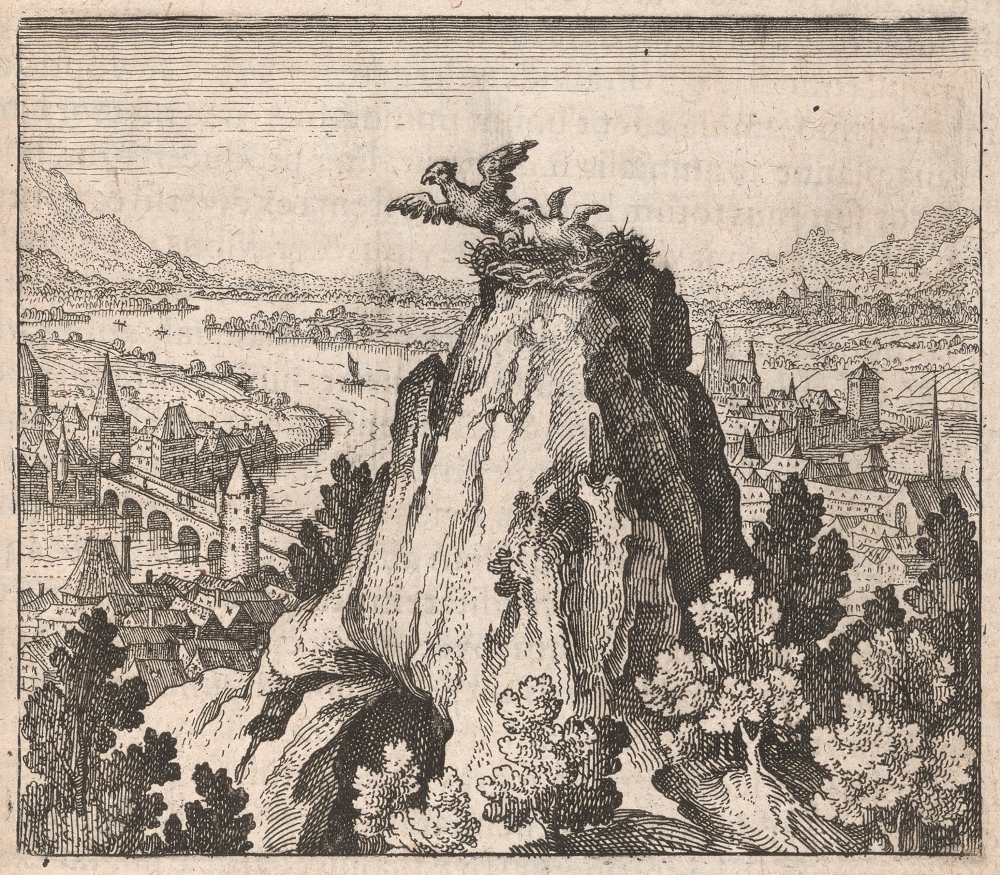

26037
EmblemeEmblem 7. Of the Secrets of Nature.
A chicken is flying out of the nest, which falls againeagain into the nest.
37
Emblema VII.De Secretis Naturæae.
Fit pullus à nido volans, qui iterùm cadit in nidum.
36
FUGA VII. in 3. seu 10. suprà.
Der Vogel jung vom Neste fleugt / und fällt
wider ins Nest.

EpigrammeEpigram 7.
The bird of Jove had nested on a rockerock,
Wheere SheeShe brought forth, and fed her tender flockeflock:
Out flyesflys the eldest having wings and traynetrain,
PulldPulled by the naked nestling backeback againeagain
To the deserted nest: you hitthit the naylenail,
If you know how to joynejoin them head and tayletail.
Epigramma VII.
Rupe cavâ nidum Jovis ales struxerat, in quo
Delituit, pullos enutriítque suos:
Horum unus levibus voluit se tollere pennis,
At fuit implumi fratre retentus ave.
Inde volans redit in nidum, quem liquerat, illis
Junge caput caudæae, tum nec inanis eris.
VII. Epigrammatis Latini versio Germanica.
In einem holen Stein der Adler sein Nest gemachet hät /
Darein er verborgen sein Jungen ernehren thät /
Von diesen einer kont mit Federn leicht sich erheben /
Aber der andrander federloß wolt solches nicht nachgeben.
Drumb der fliegende widerfallt in sein Nest/ darauß er gangen /
Füg ihn das Haupt zum hindern / so wirstu es erlangen.
27038
What Hippocrates, the defender and propugnator of PhysitiansPhysicians, affirms of hu=
mors, that they are different and many in man, and not one onelyonly, otherwise
various diseases could not arise, that weewe perceive to be true of the elements
of the world: for if there was but one onelyonly element, there could be noeno -
mutation of it into another, noeno generation nor corruption, yea all things
would be one immutable thing, and noeno meteors, minerallsminerals, plants, and
animallsanimals could be naturally from thence produced. For this reason the su=
preme Creator composed the whole systemesystem of this world of diversdiverse and -
contrary natures, namely of light and heavy, hotthot and cold, moist and dry -
that one might by affinity passepass into the other, and soeso a composition be
made of bodyesbodies, which might be very different one from another in essence,
qualityesqualities, virtues, and effects: for in things perfectly mixed are the light Ele=
ments, as fire and aireair, and allsoalso the heavy, as earth and water, which are soeso
æquallyequally tempered together, that one recedes not from the other, but suffers itselfeitself
to be easily taken and held by the other as neighbourneighbor by neighbourneighbor: Earth and aireair
are contrary one to the other, soeso fire and water, yet notwithstanding fire main=
tainesmaintains freindshipfriendship with aireair by heat coḿoncommon to both, with earth by siccity: soeso
aireair with water, and water with earth: by which means they are all joynedjoined
by bonds of affinity or rather consanguinity, and doedo remayneremain together in
one composition, which, if it abound with the light Elements, elevates the -
heavy with it, if with the heavy, weighs downedown the light with it: This is decla=
red by the two Eagles, one with wings, the other without, of which that -
which endeavouredendeavored to fly is restrained by the other an example hereof is evident
in the fight of the Falcon and Heron, for the Falcon soaring higher in -
the aireair by his Speedy flying, takes and tears the Heron with his Talons, by
whose weight both fall to the ground: The contrary appeared in the -
artificiallartificial dove or Automa of Archytas, where heavy things were lifted up
by light, that is, the wooden body of it caryedcarried into the aireair by the -
Spirit included within: In the PhilosophicallPhilosophical subject the light things doedo
first prædominatepredominate the heavy, as to plenty, but they are overcome by vir=
tue of the heavy things, and in processe of time the Eagles wings are cut -
ofoff, and one very great bird (namely an Ostrich) is made of two, which
can consume iron, and which being impeded by weight runnsruns more upon
the earth,
Discourse 7.
What Hippocrates, the defender and propugnator of PhysitiansPhysicians, affirms of hu=
mors, that they are different and many in man, and not one onelyonly, otherwise
various diseases could not arise, that weewe perceive to be true of the elements
of the world: for if there was but one onelyonly element, there could be noeno -
mutation of it into another, noeno generation nor corruption, yea all things
would be one immutable thing, and noeno meteors, minerallsminerals, plants, and
animallsanimals could be naturally from thence produced. For this reason the su=
preme Creator composed the whole systemesystem of this world of diversdiverse and -
contrary natures, namely of light and heavy, hotthot and cold, moist and dry -
that one might by affinity passepass into the other, and soeso a composition be
made of bodyesbodies, which might be very different one from another in essence,
qualityesqualities, virtues, and effects: for in things perfectly mixed are the light Ele=
ments, as fire and aireair, and allsoalso the heavy, as earth and water, which are soeso
æquallyequally tempered together, that one recedes not from the other, but suffers itselfeitself
to be easily taken and held by the other as neighbourneighbor by neighbourneighbor: Earth and aireair
are contrary one to the other, soeso fire and water, yet notwithstanding fire main=
tainesmaintains freindshipfriendship with aireair by heat coḿoncommon to both, with earth by siccity: soeso
aireair with water, and water with earth: by which means they are all joynedjoined
by bonds of affinity or rather consanguinity, and doedo remayneremain together in
one composition, which, if it abound with the light Elements, elevates the -
heavy with it, if with the heavy, weighs downedown the light with it: This is decla=
red by the two Eagles, one with wings, the other without, of which that -
which endeavouredendeavored to fly is restrained by the other an example hereof is evident
in the fight of the Falcon and Heron, for the Falcon soaring higher in -
the aireair by his Speedy flying, takes and tears the Heron with his Talons, by
whose weight both fall to the ground: The contrary appeared in the -
artificiallartificial dove or Automa of Archytas, where heavy things were lifted up
by light, that is, the wooden body of it caryedcarried into the aireair by the -
Spirit included within: In the PhilosophicallPhilosophical subject the light things doedo
first prædominatepredominate the heavy, as to plenty, but they are overcome by vir=
tue of the heavy things, and in processe of time the Eagles wings are cut -
ofoff, and one very great bird (namely an Ostrich) is made of two, which
can consume iron, and which being impeded by weight runnsruns more upon
the earth,
27038
Discourse 7.
than flyesflys in the aireair, though it hathhas goodly wings: Concerning
this or the like Hermes (as the Author of Aurora chapt. 5. affirms) writes thus:
I have considered a bird worthy to be had in estimation by the wise, which
flyesflys when it is in Aries, Cancer, Libra, or CapricorneCapricorn, and you will never
faylefail of it in pure mynesmines, and rocky mountains: Concerning the same Se=
nior in Tabula, where two are seen, one volatile the other without wings,
whereof one holds the others tayletail by its beakebeak, that they cannot easily be
seperated: For this is the device and machination of universalluniversal nature,
allwayesalways to rayseraise heavy things by light, and likewise to depressedepress light
things by heavy, as the Author of the perfect Magistery declarethdeclares, who
constitutes seven minerallmineral spirits, as it were erratickeerratic StarrsStars, and -
soeso many metallickemetallic bodyesbodies, as fixed StarrsStars, and enjoynsenjoins these to be
wedded to those: from thence allsoalso Aristotle the Chymist, the Spirit, saythsays heehe,
having dissolved the body and SouleSoul, soeso as to exist in their formeform, dothdoes not
remaineremain a fixed thing, unlesseunless you operate upon it: now operation is to joynejoin -
it with the body, from which you præparedprepared it at first: because the Spirit is -
thereby prevented from flight being mixed with the supersistences of the -
body: the light Elements, namely aireair and fire, as a learned man declares,
doedo in CamphoreCamphor oversway the heavy; and therefore it is saydsaid wholywholly to ex=
hale and evaporate into aireair. In Argent vive, the flowers of Sulphur, Anti=
mony, the Salt of Harts blood, Sal ArmoniackeAmmoniac, and such others, the earth -
flyesflys with the aireair into the AlembickeAlembic, and is not seperated from it. In Gold,
glasseglass, Diamond, the Stone Smyris, GranatsGranites, and the like, the Elements -
doedo notwithstanding fire remayneremain alonga long time joynedjoined without detriment, -
and the earth retainesretains those things which are left in itselfeitself. In other com=
bustibles division and separation of one thing from another is effected, soeso
that the ashes are left in the bottomebottom, the water, aireair, and fire fly up=
wards: weewe must not therefore have respect to the unæquallunequal composition of
these last, being not soeso strongly mixdmixed, nor to the coḿixtioncommixtion of the first,
though more durable, yet volatile, but to the solidity, constancy, and fixity
of the midlemiddle: for soeso the bird without wings will detainedetain that which hathhas, -
and the fixed substance will fix the volatile, which must necessarily be
done . . . . . . . . . .
this or the like Hermes (as the Author of Aurora chapt. 5. affirms) writes thus:
I have considered a bird worthy to be had in estimation by the wise, which
flyesflys when it is in Aries, Cancer, Libra, or CapricorneCapricorn, and you will never
faylefail of it in pure mynesmines, and rocky mountains: Concerning the same Se=
nior in Tabula, where two are seen, one volatile the other without wings,
whereof one holds the others tayletail by its beakebeak, that they cannot easily be
seperated: For this is the device and machination of universalluniversal nature,
allwayesalways to rayseraise heavy things by light, and likewise to depressedepress light
things by heavy, as the Author of the perfect Magistery declarethdeclares, who
constitutes seven minerallmineral spirits, as it were erratickeerratic StarrsStars, and -
soeso many metallickemetallic bodyesbodies, as fixed StarrsStars, and enjoynsenjoins these to be
wedded to those: from thence allsoalso Aristotle the Chymist, the Spirit, saythsays heehe,
having dissolved the body and SouleSoul, soeso as to exist in their formeform, dothdoes not
remaineremain a fixed thing, unlesseunless you operate upon it: now operation is to joynejoin -
it with the body, from which you præparedprepared it at first: because the Spirit is -
thereby prevented from flight being mixed with the supersistences of the -
body: the light Elements, namely aireair and fire, as a learned man declares,
doedo in CamphoreCamphor oversway the heavy; and therefore it is saydsaid wholywholly to ex=
hale and evaporate into aireair. In Argent vive, the flowers of Sulphur, Anti=
mony, the Salt of Harts blood, Sal ArmoniackeAmmoniac, and such others, the earth -
flyesflys with the aireair into the AlembickeAlembic, and is not seperated from it. In Gold,
glasseglass, Diamond, the Stone Smyris, GranatsGranites, and the like, the Elements -
doedo notwithstanding fire remayneremain alonga long time joynedjoined without detriment, -
and the earth retainesretains those things which are left in itselfeitself. In other com=
bustibles division and separation of one thing from another is effected, soeso
that the ashes are left in the bottomebottom, the water, aireair, and fire fly up=
wards: weewe must not therefore have respect to the unæquallunequal composition of
these last, being not soeso strongly mixdmixed, nor to the coḿixtioncommixtion of the first,
though more durable, yet volatile, but to the solidity, constancy, and fixity
of the midlemiddle: for soeso the bird without wings will detainedetain that which hathhas, -
and the fixed substance will fix the volatile, which must necessarily be
done . . . . . . . . . .
38
Quod Hippocrates, medicorum antesignanus, de humoribus
asserit, eos esse diversos ac plures numero in homine, nec saltem
unum, alias morbos varios exoriri non posse, id nos de Elementis
mundi verum dici animadvertimus. Si n.enim unum saltem elementum
esset, nulla mutatio ejus in aliud, nulla generatio nec corruptio cõ-
tingeretcon-
tingeret, imò omnia essent unum immutabile, nec meteora, mi-
neralia, plantæae ac animalia inde naturaliter producerentur. Hinc
Creator summus totum hoc mundi Systema ex diversis &et contra-
riis naturis concinnavit, nempe ex levibus &et gravibus, calidis &et fri-
gidis, humidis &et siccis, ut una in aliam per affinitatem transiret, &et
sic compositio fieret corporum, quæae in essentia, qualitatibus, viri-
bus &et effectibus longè inter se differrent: sunt enim inperfectè
mistis Elementa levia ut ignis &et aër, nec nõnon gravia, ut terra &et aqua,
quæae æaequilibriis ita inter se temperantur, ut unum non aufugiat ab
alio, sed singula à singulis, vicina à vicinis facilè se capi &et detineri
patiantur: Terra &et aër sibi invicem adversantur, sic ignis &et aqua;
attamen ignis cum aëre per caliditatem utrique communem, cum
terra per siccitatem amicitiam fovet: sic aër cum aqua &et hæaec cum
terra: Unde omnia affinitatis aut potius consanguinitatis vinculis
connectuntur &et manent simul in una cõpositionecompositione, quæae si abundet
levibus, elevat secum gravia, si gravibus, premit secum levia: Hoc
declaratur per duas Aquilas, pennatam &et implumẽimplumem, ex quibus illa
volare conata ab hac retinetur: In Falconis &et ardeæae pugna exem-
plum hujus rei evidens est: Ille enim celeri volatu &et alis pernicibus
superior in aëre factus hanc unguibus prehendit &et lacerat, cujus
pondere in terram uterque decidit: Contrarium in Archytæae co-
lumba factitia seu Automate apparuit, ubi gravia à levibus sublata
sunt, hoc est, à spiritu interius incluso ligneum ejus corpus in aëra
raptum: In philosophico subiecto primò levia præaedominantur
gravibus, quo ad copiam, attamen à virtute gravium vincuntur:
successu autem temporis alæae aquilinæae præaescinduntur &et fit ex dua-
bus una avis præaegrandis (nempe Strutio camelus) quæae ferrum con-
sumere possit, quæaeque magis in terra sub pondere præaepedita cur-
DISCURSUS VII.
Quod Hippocrates, medicorum antesignanus, de humoribus
asserit, eos esse diversos ac plures numero in homine, nec saltem
unum, alias morbos varios exoriri non posse, id nos de Elementis
mundi verum dici animadvertimus. Si n.enim unum saltem elementum
esset, nulla mutatio ejus in aliud, nulla generatio nec corruptio cõ-
tingeretcon-
tingeret, imò omnia essent unum immutabile, nec meteora, mi-
neralia, plantæae ac animalia inde naturaliter producerentur. Hinc
Creator summus totum hoc mundi Systema ex diversis &et contra-
riis naturis concinnavit, nempe ex levibus &et gravibus, calidis &et fri-
gidis, humidis &et siccis, ut una in aliam per affinitatem transiret, &et
sic compositio fieret corporum, quæae in essentia, qualitatibus, viri-
bus &et effectibus longè inter se differrent: sunt enim inperfectè
mistis Elementa levia ut ignis &et aër, nec nõnon gravia, ut terra &et aqua,
quæae æaequilibriis ita inter se temperantur, ut unum non aufugiat ab
alio, sed singula à singulis, vicina à vicinis facilè se capi &et detineri
patiantur: Terra &et aër sibi invicem adversantur, sic ignis &et aqua;
attamen ignis cum aëre per caliditatem utrique communem, cum
terra per siccitatem amicitiam fovet: sic aër cum aqua &et hæaec cum
terra: Unde omnia affinitatis aut potius consanguinitatis vinculis
connectuntur &et manent simul in una cõpositionecompositione, quæae si abundet
levibus, elevat secum gravia, si gravibus, premit secum levia: Hoc
declaratur per duas Aquilas, pennatam &et implumẽimplumem, ex quibus illa
volare conata ab hac retinetur: In Falconis &et ardeæae pugna exem-
plum hujus rei evidens est: Ille enim celeri volatu &et alis pernicibus
superior in aëre factus hanc unguibus prehendit &et lacerat, cujus
pondere in terram uterque decidit: Contrarium in Archytæae co-
lumba factitia seu Automate apparuit, ubi gravia à levibus sublata
sunt, hoc est, à spiritu interius incluso ligneum ejus corpus in aëra
raptum: In philosophico subiecto primò levia præaedominantur
gravibus, quo ad copiam, attamen à virtute gravium vincuntur:
successu autem temporis alæae aquilinæae præaescinduntur &et fit ex dua-
bus una avis præaegrandis (nempe Strutio camelus) quæae ferrum con-
sumere possit, quæaeque magis in terra sub pondere præaepedita cur-
39
rat, quàm per aëra volet, licèt pennas speciosas habeat: De hac aut
simili Hermes (ut Author Auroræae cap.capite 5.quinto testatur) ita scribit: consy-
deravi avem sapientibus venerabilem, quæae volat, dum est in Ariete,
Cancro, Libra aut capricorno: Et acquires eam tibi perennem
meris ex mineris &et montanis petrosis: De eâdem Senior in Tabu-
la, ubi gemina visitur, volatilis &et sine pennis, quorum una rostro al-
terius Caudam invicem tenet, ne facilè separari possint. Hæaec enim
est naturæae Universæae machinatio, ut gravia semper levibus attollat,
&et vicissim levia gravibus deprimat, ut Author perfecti Magiste-
rii declarat: qui septem spiritus minerales, veluti stellas Erraticas,
&et totidem corpora metallica, ceu stellas fixas, hasq;hasque cum illis mari-
tari debere statuit. Inde &et Aristoteles Chymicus; cùm Spiritus, in-
quit, solverit corpus &et animam, ut existant in forma sua, nõnon perma-
net fixum, nisi occupaveris ipsum: Occupatio verò est, ut conjun-
gas ipsum cum corpore, de quo præaeparasti in principio; Quoniam
in eo occupatur à fuga spiritus ad supersistentia corporis. In cam-
phora, ut Bonus commemorat, Elementia levia, nempe aër &et i-
gnis, præaevalent gravibus; ideóque dicitur tota exhalare &et in aërem
abire. In argento vivo, floribus sulfuris, antimonii, sale sanguinis
cervini, armoniaco &et ejusmodi aliis terra cum aëre volat in alembi-
cum, nec separatur ab illo. In auro, vitro, adamante, lapide Smiri,
granatis, &et similibus, Elementa diutissimè illæaesa permanent con-
juncta, igne urgente &et terra retinet reliqua apud se. In aliis com-
bustibilibus fit divisio &et separatio unius ab alio, ita ut cineres in
fundo relinquanturrelinquanrur, aqua, aër &et ignis superiora petant. Non itaque
ad horum ultimorum compositionem inæaequalem, haud ita forti-
ter mixtam, respiciendum, nec ad primorum commistionem, licet
durabiliorem, tamen volatilium, sed ad mediorum soliditatem,
constantiam &et fixitatem: sic enim implumis avis detinebit pluma-
tam &et fixa substantia figet volatilem, quod fieri oportet.
rat, quàm per aëra volet, licèt pennas speciosas habeat: De hac aut
simili Hermes (ut Author Auroræae cap.capite 5.quinto testatur) ita scribit: consy-
deravi avem sapientibus venerabilem, quæae volat, dum est in Ariete,
Cancro, Libra aut capricorno: Et acquires eam tibi perennem
meris ex mineris &et montanis petrosis: De eâdem Senior in Tabu-
la, ubi gemina visitur, volatilis &et sine pennis, quorum una rostro al-
terius Caudam invicem tenet, ne facilè separari possint. Hæaec enim
est naturæae Universæae machinatio, ut gravia semper levibus attollat,
&et vicissim levia gravibus deprimat, ut Author perfecti Magiste-
rii declarat: qui septem spiritus minerales, veluti stellas Erraticas,
&et totidem corpora metallica, ceu stellas fixas, hasq;hasque cum illis mari-
tari debere statuit. Inde &et Aristoteles Chymicus; cùm Spiritus, in-
quit, solverit corpus &et animam, ut existant in forma sua, nõnon perma-
net fixum, nisi occupaveris ipsum: Occupatio verò est, ut conjun-
gas ipsum cum corpore, de quo præaeparasti in principio; Quoniam
in eo occupatur à fuga spiritus ad supersistentia corporis. In cam-
phora, ut Bonus commemorat, Elementia levia, nempe aër &et i-
gnis, præaevalent gravibus; ideóque dicitur tota exhalare &et in aërem
abire. In argento vivo, floribus sulfuris, antimonii, sale sanguinis
cervini, armoniaco &et ejusmodi aliis terra cum aëre volat in alembi-
cum, nec separatur ab illo. In auro, vitro, adamante, lapide Smiri,
granatis, &et similibus, Elementa diutissimè illæaesa permanent con-
juncta, igne urgente &et terra retinet reliqua apud se. In aliis com-
bustibilibus fit divisio &et separatio unius ab alio, ita ut cineres in
fundo relinquanturrelinquanrur, aqua, aër &et ignis superiora petant. Non itaque
ad horum ultimorum compositionem inæaequalem, haud ita forti-
ter mixtam, respiciendum, nec ad primorum commistionem, licet
durabiliorem, tamen volatilium, sed ad mediorum soliditatem,
constantiam &et fixitatem: sic enim implumis avis detinebit pluma-
tam &et fixa substantia figet volatilem, quod fieri oportet.
view: